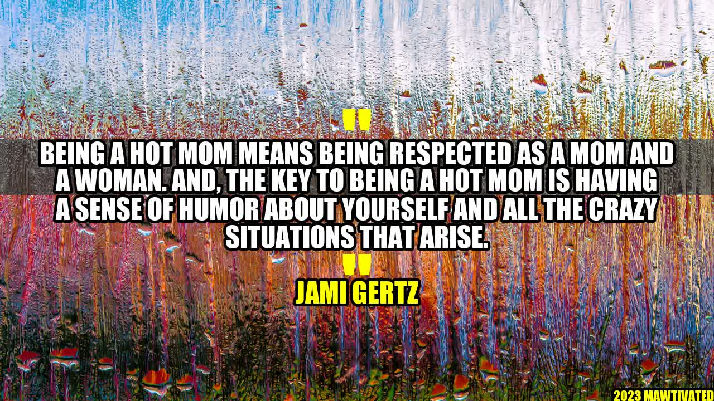

Being a Hot Mom: A Sense of Humor is Key!

Jami Gertz, a well-known actress and loving mother of three, understands the challenges of motherhood. But she also knows that being a "Hot Mom" is not only about looking good, but also about having a sense of humor.
Being a Hot Mom means being respected as a mom and a woman. And, the key to being a Hot Mom is having a sense of humor about yourself and all the crazy situations that arise.
As a mother, you may encounter situations that can make you feel embarrassed, frustrated, or overwhelmed. But with a sense of humor, you can take these challenges with a grain of salt and turn them into opportunities to bond with your kids, learn new things, and grow as a person.
How to Be a Hot Mom with a Sense of Humor
If you want to be a Hot Mom, you need to embrace your imperfections, laugh at yourself, and enjoy your role as a mother. Here are some practical tips to help you achieve this:
- Don't take yourself too seriously. Motherhood can be serious business, but it doesn't mean that you have to be serious all the time. Take time to have fun with your kids, let loose, and be silly. Your kids will love it, and you will feel more relaxed and happy.
- Find the humor in tough situations. When your kid has a meltdown in public, spills juice on your new dress, or draws on the walls with permanent marker, it can be hard to keep your cool. But if you can find the humor in these situations, you can diffuse the tension and make the best of a bad situation.
- Learn to laugh at your mistakes. We all make mistakes as mothers, but instead of beating ourselves up over them, we can choose to laugh about them. By doing so, we teach our kids that it's okay to make mistakes, and that it's important to have a positive attitude and learn from them.
- Don't worry about what others think. Being a Hot Mom is not about fitting into someone else's standards or pleasing others. It's about being confident, authentic, and true to who you are. Don't let others judge or define you, and don't be afraid to be yourself.
Examples of Hot Moms with a Sense of Humor
There are many celebrity moms who embody the Hot Mom spirit with their sense of humor and positive attitude. Here are some examples:
- Kristen Bell: The actress and mother of two is known for her humorous and honest approach to motherhood. She often shares her parenting struggles on social media, and uses her platform to advocate for mental health and women's rights.
- Jennifer Garner: The actress and mother of three has a reputation for being down-to-earth and funny. She often jokes about her parenting fails on talk shows and interviews, and encourages other mothers to be kind to themselves.
- Mila Kunis: The actress and mother of two has a quick wit and a sharp sense of humor. She often makes fun of herself and her husband Ashton Kutcher, and doesn't shy away from discussing the challenges of parenting in the public eye.
What these Hot Moms have in common is their ability to be real, relatable, and funny. They show us that motherhood can be messy, chaotic, and stressful, but it's also rewarding, joyful, and full of love.
Conclusion
To be a Hot Mom, you don't need to have a perfect body, a flawless face, or a glamorous lifestyle. You just need to have a sense of humor about yourself and your life as a mother. Remember these three key points:
- Life is too short to be serious all the time. Let your hair down and have fun with your kids.
- Motherhood is not easy, but it's also not the end of the world. Try to find the humor in every situation.
- You are unique, beautiful, and worthy of love just the way you are. Don't let anyone tell you otherwise.
So, embrace your inner Hot Mom, and don't forget to laugh!
- Jami Gertz
#hotmom #senseofhumor #motherhood #parenting
Curated by Team Akash.Mittal.Blog
Curated by Team Akash.Mittal.Blog
Share on Twitter Share on LinkedIn